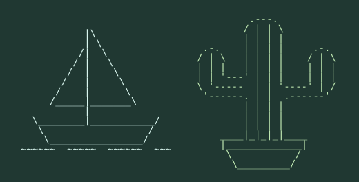
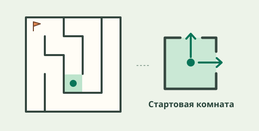
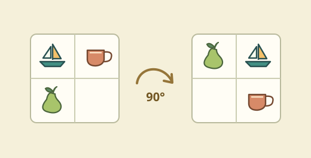
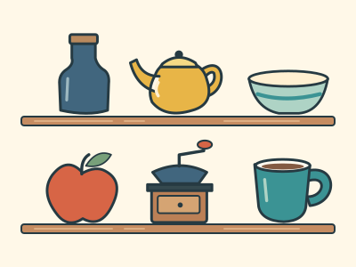
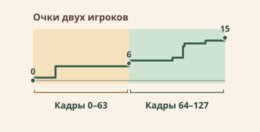

ASCII-рисунки
Модель рисует десять предметов, а в новой сессии узнаёт их по силуэтам. Какие два предмета нарисовала Astra?
Показать ответ
Парусник и кактус.
| Место | Модель | Харнес | Балл из 100 |
|---|---|---|---|
| 1 | GPT-6.2 Astra | Codex 0.171.0 · OpenAI | 100,00 |
| 2 | Opus 5.5 Разбор ответов | Claude Code 2.1.278 · OpenRouter | 92,32 |
| 3 | DeepSeek V4.1 Flash | Claude Code 2.1.278 · OpenRouter | 87,32 |
| 4 | Astra 6 | Claude Code 2.1.278 · OpenRouter | 82,68 |
| 5 | Sonnet 5.5 | Claude Code 2.1.278 · OpenRouter | 64,50 |
| 6 | Haiku 5.5 | Claude Code 2.1.278 · OpenRouter | 48,59 |
Первые четыре задачи дают до 24,75 балла каждая. За аркадную задачу начисляется 1 балл при успехе и 0 при ошибке. Методика
В пяти задачах модель работает с рисунками, комнатами лабиринта и записью игры. Попробуйте ответить на вопросы по иллюстрациям.

Модель рисует десять предметов, а в новой сессии узнаёт их по силуэтам. Какие два предмета нарисовала Astra?
Парусник и кактус.

Модель видит только описание дверей в текущей комнате. Какой первый ход от зелёной точки ведёт к флажку кратчайшим путём?
Вперёд. Весь путь займёт пять ходов — вперёд, вперёд, влево, вперёд, влево.

Модель следит за своими SVG-рисунками при сдвигах и поворотах. Где окажется парусник после поворота квадрата на 90° по часовой стрелке?
В верхней правой клетке.

Готовую сцену модель изучает по коду SVG или по картинке. Что стоит под чайником и слева от бирюзовой кружки?
Ручная кофемолка.

Модель строит индекс игровых клипов по 64 кадра. В каком из двух отрезков сильнее вырос общий счёт игроков?
Во втором, с кадра 64 по 127. Игроки набрали 9 очков, в первом отрезке — 6.